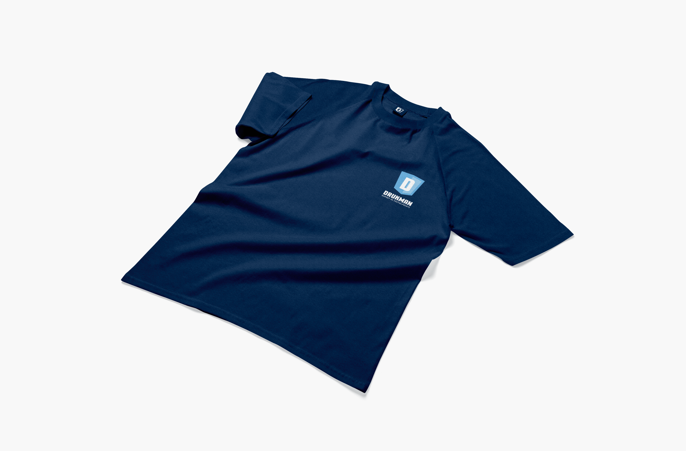
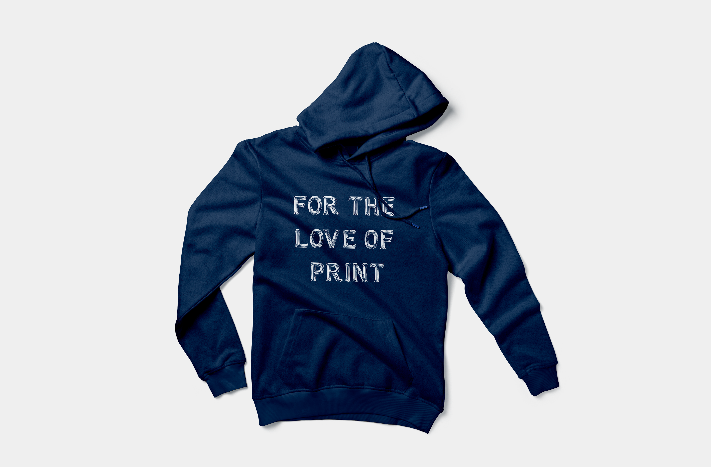
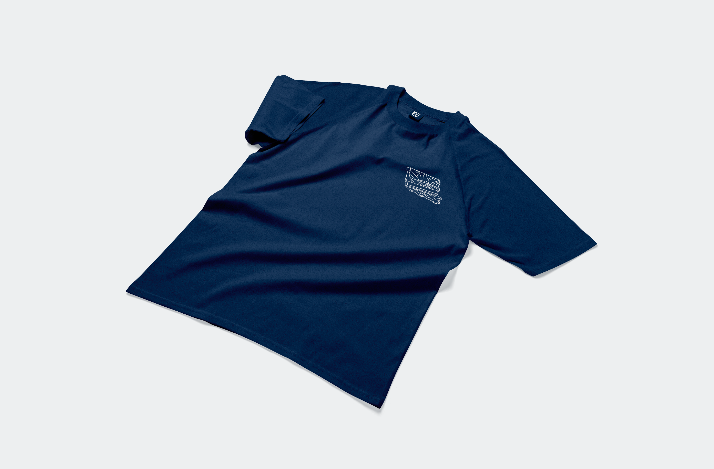
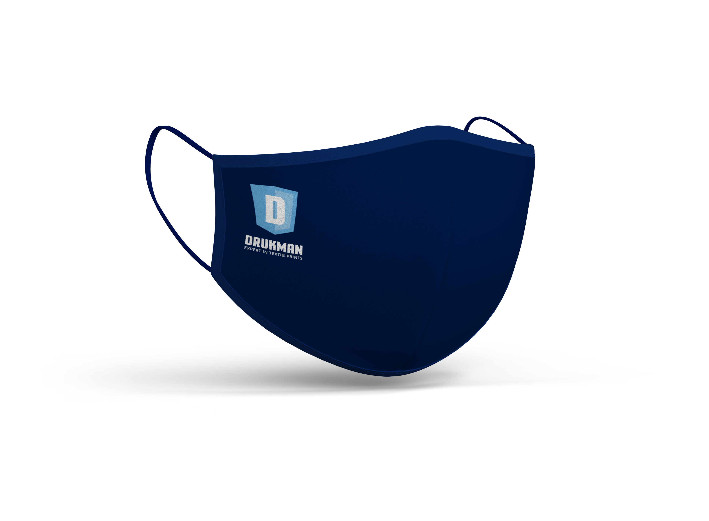

Bibi
Drukman
Dörst
Multiplied
Contact
Re-Branding
Textiel Drukkerij - Berlaar, België
Re-Branding, Drukwerk en Company fashion door Studio Suus
Drukman is een Textiel drukkerij die voornamelijk werkkledij, veiligheidskledij, company fashion en ander
reclame textiel bedrukt voor bedrijven en grote evenementen
zoals beurzen en festivals. Drukman is gespecialiseerd in Zeefdruk en Digitale Textiel Transfers. Zelf heb ik 2
jaar als Grafisch Ontwerper en
Pre-press verantwoordelijke gewerkt bij drukman. Toen ik in de drukkerij werkte was het logo en de huisstijl van
Drukman niet meer gewijzigd sinds de opening
in 2015. Deze waren dus toe aan wat opfrissing. Het logo werd behouden maar de sfeer van de huisstijl mocht
veranderen. Daarom heb ik het kleurenpallet
van drukman aangepast naar iets frissere en moderne kleuren, de huisstijl een nieuwe layout gegeven en voor
toffe nieuwe werkkledij gezorgd met enkele
kleine illustraties.

Company Fashion
Drukman bestaat uit een klein hecht team dat vaak direct in contact staat met de klanten en leveranciers.
Daarom was dan ook een nieuwe werkkledij lijn ook aan de orde voor en professionele en verzorgde uitstraling.
De werkkledij moest eenvoudig en comfortabel zijn en met kleine een knipoog.



